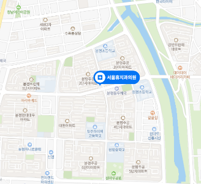

진료시간 및 오시는 길
Masterpiece Contact
부산 수영구 수영로 693, BNK 수영타워 8층
(수영역 1번 출구 앞)
(수영역 1번 출구 앞)
051.977.8000
평 일
AM 09:00 - PM 06:00
토 요 일
AM 09:00 - PM 01:00
점심시간
PM 12:30 - PM 02:00
토요일 점심시간 없이 진료 / 일요일 공휴일 휴진
평 일
AM 09:00 - PM 06:00
토 요 일
AM 09:00 - PM 01:00
점심시간
PM 12:30 - PM 02:00
토요일 점심시간 없이 진료 / 일요일 공휴일 휴진

지하철 이용 시
부산
2호선
3호선
수영역 1번 출구에서 도보 36m에 위치
버스 이용 시
일반버스 - 수영교차로 / 수영역
5-1, 20, 39, 40, 42, 49, 51, 54, 62,
63, 131, 141, 141(심야), 155, 210,
1001, 1003, 1003(심야), 2026
마을버스
수영교차로.팔도시장 : 해운대구3
브라운닷호텔 : 수영구2
자차 이용 시
부산은행 수영타워 지하 주차장 이용 가능

지하철 이용 시
부산
2호선
3호선
수영역 1번 출구에서 도보 36m에 위치
버스 이용 시
일반버스 - 수영교차로 / 수영역
5-1, 20, 39, 40, 42, 49, 51, 54, 62,
63, 131, 141, 141(심야), 155, 210,
1001, 1003, 1003(심야), 2026
마을버스
수영교차로.팔도시장 : 해운대구3
브라운닷호텔 : 수영구2
자차 이용 시
부산은행 수영타워
지하 주차장 이용 가능
지하 주차장 이용 가능